03_XModal_Input/EXP3_P1_Accel_15pt_with_Geometry.unv. Because geometry and FRFs are in one file, no merge step is needed for this plate.PT:j:+3 PT:1:+3.


Steel rectangle P1 (12.95 × 5.93 × 0.381 in), roving-hammer test on Lab Day 1 (10/13). The accelerometer was waxed near grid point 1 (about x = 1.0, y = 1.0 in) and stayed there; the hammer hit all 15 grid points. The plate sat on four balls near the corners.
Result: 6 modes identified in 383–2352 Hz — 5 by the Pole Wizard, 1 by hand. Data: 15 FRFs, 801 lines, Δf = 3.906 Hz, 0–3125 Hz.
Re-run on 10/20. The X-Modal fit was repeated on 10/20 with the same file and settings to capture screenshots, diagrams and videos. The Wizard frequencies match the 10/13 run (450.83 / 600.20 / 1239.62 / 1294.91 / 2196.15 Hz) to within 0.06 Hz.
| Mode | Shape | X-Modal f (Hz) | ζ (%) | Picked by | NX free-free (Hz) | Δ | MAC vs NX |
|---|---|---|---|---|---|---|---|
| 1 | (3,1) 1st bending | 450.89 | 1.15 | Wizard | 451.6 | -0.2 % | 0.992 |
| 2 | (2,2) 1st twist | 600.20 | 1.30 | Wizard | 597.4 | +0.5 % | 0.993 |
| 3 | (4,1) 2nd bending | 1239.63 | 0.61 | Wizard | 1245.5 | -0.5 % | 0.932 |
| 4 | (3,2) bend+twist | 1294.91 | 0.73 | Wizard | 1295.1 | -0.0 % | 0.991 |
| 5 | (1,3) cross bending | 2174.04 | 0.33 | hand | 2158.7 | +0.7 % | 0.974 |
| 6 | (4,2) | 2196.10 | 0.49 | Wizard | 2198.2 | -0.1 % | 0.965 |
| Subfolder | Contents | Files |
|---|---|---|
01_Raw_Data | the lab .mat files exactly as recorded + raw-data inventory CSV + raw FRF plots | 24 |
02_Grid_Geometry | wireframe/geometry files, grid map, point coordinates | 4 |
03_XModal_Input | the relabelled .unv / .mat files that were imported into X-Modal | 4 |
04_Wizard_and_Fit | consistency diagrams (Wizard and final picks), FRF synthesis, mode table CSV, hand-vs-Wizard plot | 5 |
05_Mode_Shapes_Animations | X-Modal .mov recordings, 3 s .gif loops, peak-deflection stills, all-modes panel | 19 |
06_Coherence | coherence for every point, coherence summary map | 2 |
07_NX_Comparison | test vs NX frequency table and plot, MAC matrix, shape-by-shape comparison | 4 |
15 hit points on a 3 × 5 grid with a 0.75 in edge inset: columns at x = 0.75, 3.60, 6.45, 9.30, 12.15 in and rows at y = 0.75, 2.94, 5.125 in, numbered row by row from the bottom-left. Reference (sensor) node = 1 because the accelerometer sat next to point 1.
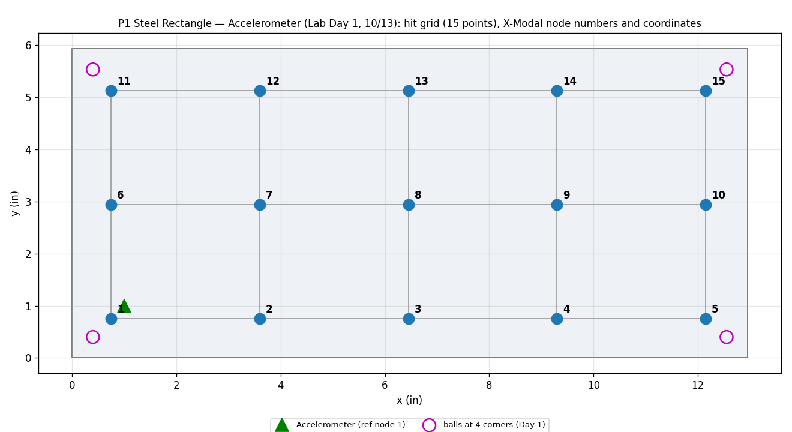
| Node | x (in) | y (in) | Raw file |
|---|---|---|---|
| 1 | 0.750 | 0.750 | Rect1x1.MAT |
| 2 | 3.600 | 0.750 | Rect1x2.mat |
| 3 | 6.450 | 0.750 | Rect1x3.mat |
| 4 | 9.300 | 0.750 | Rect1x4.mat |
| 5 | 12.150 | 0.750 | Rect1x5.mat |
| 6 | 0.750 | 2.938 | Rect2x1.mat |
| 7 | 3.600 | 2.938 | Rect2x2.mat |
| 8 | 6.450 | 2.938 | Rect2x3.mat |
| 9 | 9.300 | 2.938 | Rect2x4.mat |
| 10 | 12.150 | 2.938 | Rect2x5.mat |
| 11 | 0.750 | 5.125 | Rect3x1.mat |
| 12 | 3.600 | 5.125 | Rect3x2.mat |
| 13 | 6.450 | 5.125 | Rect3x3.mat |
| 14 | 9.300 | 5.125 | Rect3x4.mat |
| 15 | 12.150 | 5.125 | Rect3x5.mat |
Each .mat in 01_Raw_Data (from Lab Data/EXP3/LabDay1/Steel_Rectagle) is one hit point, saved by V-Acquisition into a MATLAB cell array called UFCELLS with 4 Universal-File datasets: two 151 headers (program names: V-Acquisition, ver. Beta 1), one 164 units record (“British (lbf,g*s^2,F”), one 58 FRF (type 4: complex H(f), 801 lines from 0 to 3125 Hz, Δf = 3.90625 Hz, ordinate Volts/Volts — the calibration is 1 V/V so the values are raw voltage ratios) and one 58 coherence (type 6, real 0–1). The response/reference labels in every file are the defaults CHAN 2 / CHAN 1, which is why the files were relabelled before X-Modal (see the Python section). Day 1 has repeat files for some points (e.g. Rect1x1.2.MAT, Rect1x1.3.mat). The X-Modal set uses the file names listed in the table (the same set fitted on 10/13). All 21 files are kept in 01_Raw_Data.
| Pt | File | Recorded | Raw labels (resp / ref) | Lines | Median γ² | Min γ² |
|---|---|---|---|---|---|---|
| 1 | Rect1x1.MAT | 13Oct2026 10:28:45 | CHAN 2 dir0 / CHAN 0 dir0 | 801 | 0.914 | 0.513 |
| 2 | Rect1x2.mat | 13Oct2026 10:51:48 | CHAN 2 dir0 / CHAN 1 dir0 | 801 | 0.932 | 0.69 |
| 3 | Rect1x3.mat | 13Oct2026 10:56:38 | CHAN 2 dir0 / CHAN 1 dir0 | 801 | 0.999 | 0.02 |
| 4 | Rect1x4.mat | 13Oct2026 10:57:38 | CHAN 2 dir0 / CHAN 1 dir0 | 801 | 0.998 | 0.631 |
| 5 | Rect1x5.mat | 13Oct2026 10:59:41 | CHAN 2 dir0 / CHAN 1 dir0 | 801 | 0.916 | 0.394 |
| 6 | Rect2x1.mat | 13Oct2026 11:02:13 | CHAN 2 dir0 / CHAN 1 dir0 | 801 | 0.94 | 0.269 |
| 7 | Rect2x2.mat | 13Oct2026 11:05:35 | CHAN 2 dir0 / CHAN 1 dir0 | 801 | 0.998 | 0.312 |
| 8 | Rect2x3.mat | 13Oct2026 11:08:08 | CHAN 2 dir0 / CHAN 1 dir0 | 801 | 0.987 | 0.239 |
| 9 | Rect2x4.mat | 13Oct2026 11:12:11 | CHAN 2 dir0 / CHAN 1 dir0 | 801 | 0.99 | 0.016 |
| 10 | Rect2x5.mat | 13Oct2026 11:13:48 | CHAN 2 dir0 / CHAN 1 dir0 | 801 | 0.971 | 0.265 |
| 11 | Rect3x1.mat | 13Oct2026 11:16:04 | CHAN 2 dir0 / CHAN 1 dir0 | 801 | 0.992 | 0.245 |
| 12 | Rect3x2.mat | 13Oct2026 11:16:58 | CHAN 2 dir0 / CHAN 1 dir0 | 801 | 0.999 | 0.642 |
| 13 | Rect3x3.mat | 13Oct2026 11:19:57 | CHAN 2 dir0 / CHAN 1 dir0 | 801 | 0.992 | 0.03 |
| 14 | Rect3x4.mat | 13Oct2026 11:20:40 | CHAN 2 dir0 / CHAN 1 dir0 | 801 | 0.997 | 0.413 |
| 15 | Rect3x5.mat | 13Oct2026 11:21:25 | CHAN 2 dir0 / CHAN 1 dir0 | 801 | 0.979 | 0.036 |
Full inventory: 01_Raw_Data/P1_Accel_raw_data_inventory.csv.
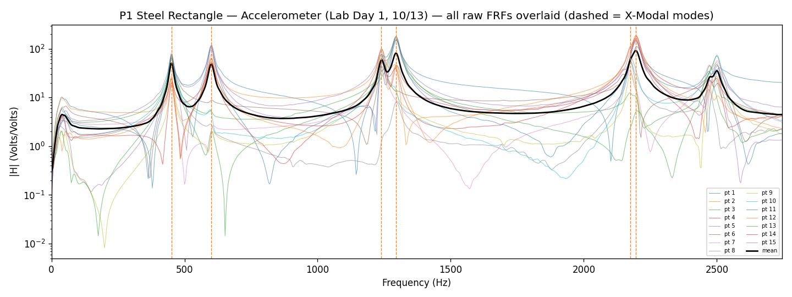
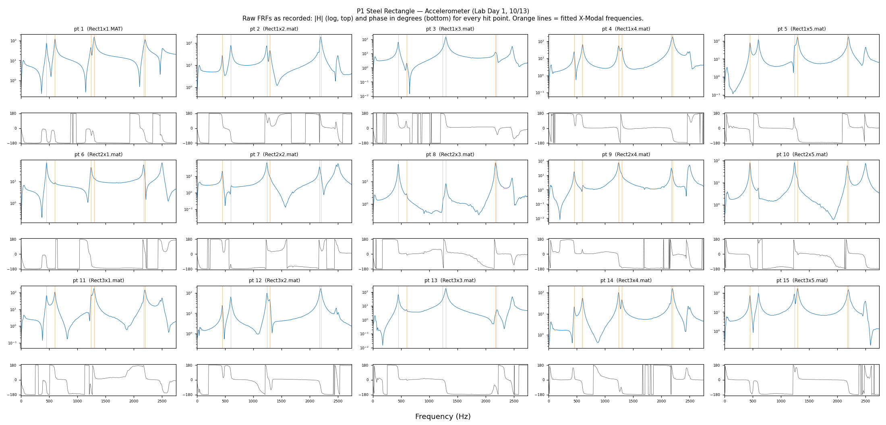
What coherence is. For every hit point the analyzer averaged several hammer hits (ensembles). Coherence γ²(f) = |Gxy|² / (Gxx·Gyy) compares the averaged cross-spectrum of hammer force (x) and sensor response (y) with their auto-spectra. It answers: “at this frequency, how much of the measured response is explained linearly by the measured hammer force?” γ² = 1 means every hit gave the same input–output relationship (clean, repeatable, linear); γ² near 0 means the response at that frequency was mostly noise or something not caused by the force.
How to read it here. High coherence (≥0.9) at the resonance peaks is what matters, because that is where the modal fit gets its information. Dips are normal and expected at anti-resonances and at points that sit on a nodal line of a mode (almost no response, so the signal is buried in noise). Broad low-coherence bands across many frequencies usually mean a bad set of hits (double hits, hammer skidding, too-soft/too-hard tip), the plate rattling on its supports, or sensor/cable noise. Coherence only tells you about repeatability of the measurement – not whether the sensor was in a good place, and not whether the fit is right.
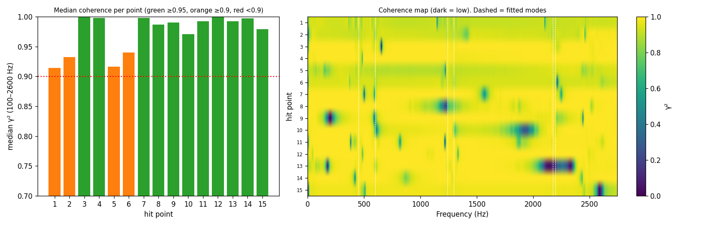
| Pt | M1 451 | M2 600 | M3 1240 | M4 1295 | M5 2174 | M6 2196 |
|---|---|---|---|---|---|---|
| 1 | 0.95 | 0.93 | 0.91 | 0.92 | 0.90 | 0.92 |
| 2 | 0.87 | 0.84 | 0.89 | 0.87 | 0.92 | 0.91 |
| 3 | 0.99 | 0.96 | 1.00 | 1.00 | 0.96 | 0.95 |
| 4 | 0.98 | 0.99 | 1.00 | 0.98 | 1.00 | 1.00 |
| 5 | 0.95 | 0.92 | 0.94 | 0.93 | 0.93 | 0.95 |
| 6 | 0.94 | 0.86 | 0.93 | 0.87 | 0.93 | 0.90 |
| 7 | 0.99 | 0.86 | 1.00 | 0.99 | 1.00 | 0.97 |
| 8 | 1.00 | 1.00 | 0.45 | 0.79 | 1.00 | 1.00 |
| 9 | 0.99 | 0.66 | 1.00 | 0.99 | 0.99 | 0.93 |
| 10 | 1.00 | 0.63 | 0.99 | 0.85 | 1.00 | 0.95 |
| 11 | 0.99 | 1.00 | 0.99 | 1.00 | 0.98 | 1.00 |
| 12 | 0.99 | 0.99 | 1.00 | 0.99 | 1.00 | 1.00 |
| 13 | 1.00 | 0.87 | 0.97 | 1.00 | 0.08 | 0.16 |
| 14 | 0.98 | 1.00 | 1.00 | 0.98 | 1.00 | 1.00 |
| 15 | 0.98 | 0.98 | 0.97 | 0.98 | 0.97 | 0.98 |
Reading this table. Low values (red) at a mode: pt 8 at M3 (0.45), pt 8 at M4 (0.79), pt 9 at M2 (0.66), pt 10 at M2 (0.63), pt 13 at M5 (0.08), pt 13 at M6 (0.16). These are points where the mode barely moves (near a nodal line) or where a neighbouring mode/anti-resonance sits on the same line, so the response at that frequency is tiny and noise dominates. They do not hurt the fit because the other points carry that mode strongly.
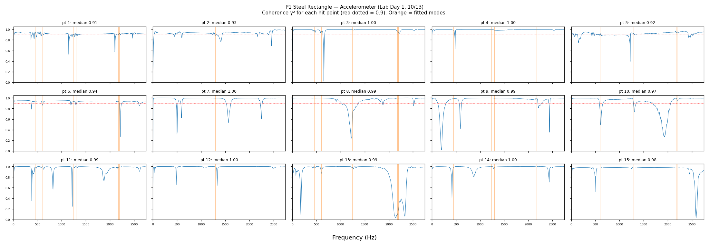
Follow these in order to reproduce the fit. Screenshots are in XModal_Results/00_Walkthrough_Screenshots (taken on P1 and P3; the menus are identical for every plate). The full illustrated walkthrough is 00_XModal_Walkthrough.html.
03_XModal_Input/EXP3_P1_Accel_15pt_with_Geometry.unv. Because geometry and FRFs are in one file, no merge step is needed for this plate.PT:j:+3 PT:1:+3.What the Pole Wizard does. After the green start button, X-Modal fits the FRFs again and again at increasing model order (rows 1–20 of the consistency diagram). A pole that keeps showing up at the same frequency, damping and mode shape as the order rises is a physical mode; poles that move around are mathematical noise. The symbols say how consistent each pole is: blue diamond = frequency, damping and shape vector are stable (“pole & vector”), green triangle = frequency + damping stable, red triangle = frequency only, magenta circle = only its conjugate. The Wizard only accepts columns that build into a black cluster square – i.e. mostly blue diamonds – and averages the cluster.
What a hand pick is. When a real peak has no cluster (only red/green triangles), the Wizard skips it. You can click a single symbol in that column (we used the highest model order, 19) to add that one pole to the list. That is a hand pick.
The practical differences.
The Wizard found 5 of the 6 modes. On 10/13 the same settings also skipped (1,3); this time it was added by hand at 2174.04 Hz. Its Python MPC is 0.91 (a slightly complex shape because (4,2) is only 22 Hz away), but its MAC with NX (1,3) is 0.97, so the hand pick is a real mode. The 2472 Hz peak (probably (5,1)) is above the bracket and was not fitted.
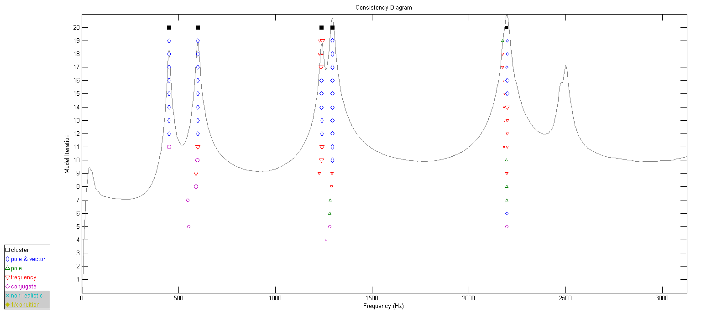

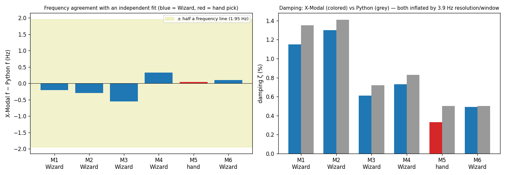
| Mode | Picked by | X-Modal f | Python f | Diff (Hz) | X-Modal ζ % | Python ζ % | Python MPC |
|---|---|---|---|---|---|---|---|
| 1 | Wizard | 450.89 | 451.10 | -0.21 | 1.15 | 1.35 | 1.0 |
| 2 | Wizard | 600.20 | 600.50 | -0.30 | 1.3 | 1.41 | 0.999 |
| 3 | Wizard | 1239.63 | 1240.18 | -0.55 | 0.61 | 0.72 | 0.991 |
| 4 | Wizard | 1294.91 | 1294.58 | +0.33 | 0.73 | 0.83 | 0.997 |
| 5 | hand | 2174.04 | 2174.00 | +0.04 | 0.33 | 0.5 | 0.912 |
| 6 | Wizard | 2196.10 | 2196.00 | +0.10 | 0.49 | 0.5 | 0.986 |
MPC (modal phase collinearity) near 1 = a clean real (normal) mode shape; lower = the shape is complex, usually because a close mode or noise is mixed in. Damping from both methods is inflated by the 3.9 Hz frequency resolution and the force/exponential window, so compare damping between modes, not as absolute material damping.
X-Modal PTD (polyreference time domain) fit of 15 FRFs over 383–2352 Hz: for each mode a natural frequency, a damping ratio, and a mode shape (the residue at every hit point). Final values from the Group Manager:
| Mode | Shape | f (Hz) | ζ (%) | Picked by |
|---|---|---|---|---|
| 1 | (3,1) 1st bending | 450.89 | 1.15 | Wizard |
| 2 | (2,2) 1st twist | 600.20 | 1.30 | Wizard |
| 3 | (4,1) 2nd bending | 1239.63 | 0.61 | Wizard |
| 4 | (3,2) bend+twist | 1294.91 | 0.73 | Wizard |
| 5 | (1,3) cross bending | 2174.04 | 0.33 | hand |
| 6 | (4,2) | 2196.10 | 0.49 | Wizard |
CSV: 04_Wizard_and_Fit/P1_Accel_XModal_modes.csv.
Red wireframe = undeformed plate, black = deformed mode shape, isometric view, amplitude ×2.8. Each mode has a .mov (recorded in X-Modal), a looping .gif and a _iso.png still at peak deflection. X-Modal numbers modes 1, 3, 5 … because every mode is listed with its conjugate (negative-frequency) twin.
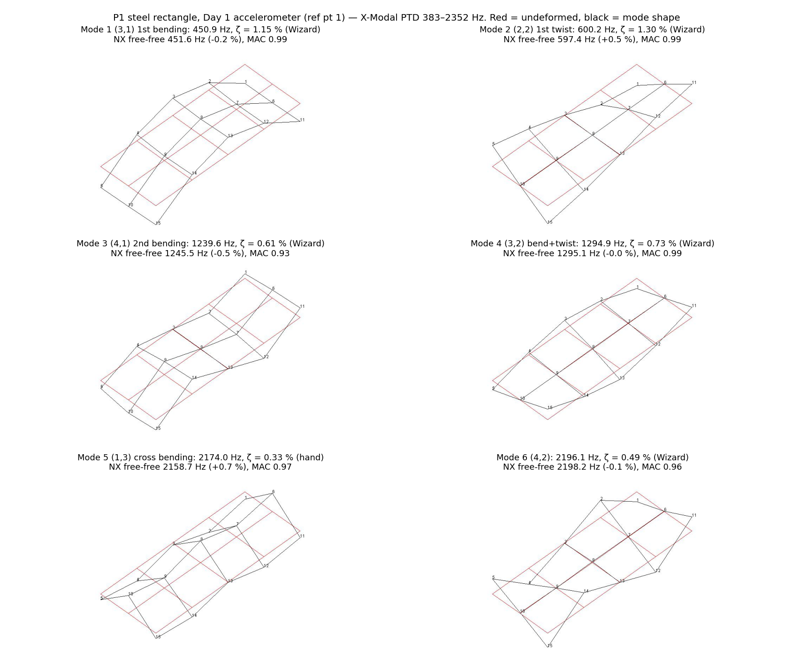
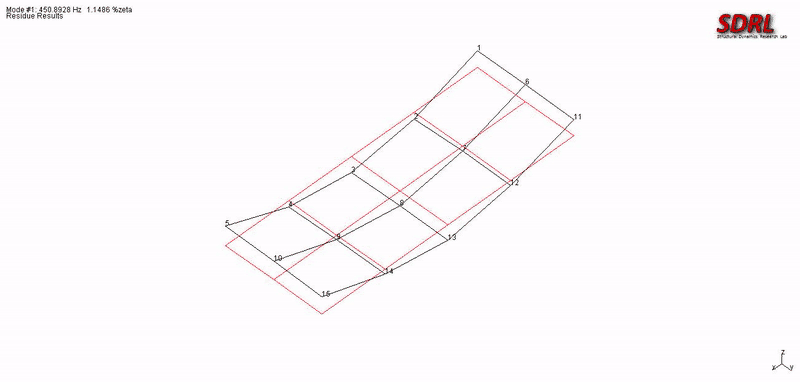
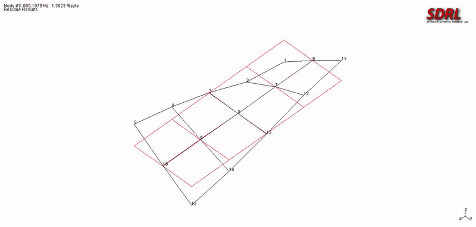
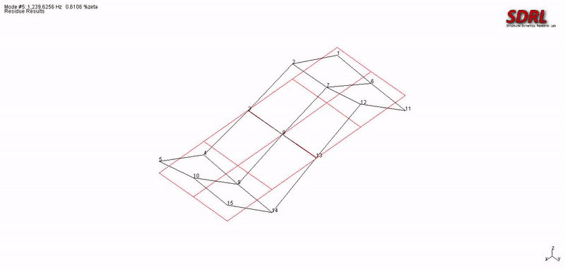
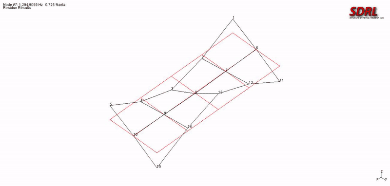
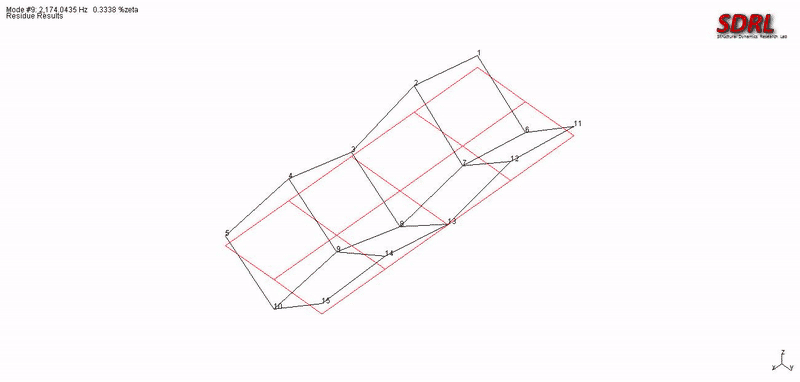
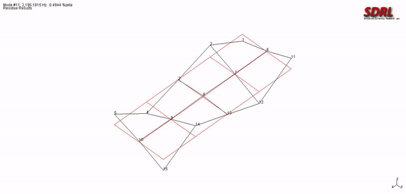
Free-free NX and the test agree within 0.7 % for all six modes, and every MAC is 0.93–0.99. The corner-spring NX model is slightly stiffer (+0.2 to +1.5 %) because it puts the springs exactly at the corners; the real balls were a little inboard. (4,1) has the lowest MAC (0.93) because (3,2) is only 55 Hz away and leaks into it at a few points.
| Mode | Shape | Test f (Hz) | NX free-free | Δ vs free-free | NX corner springs | Δ vs springs | MAC vs NX |
|---|---|---|---|---|---|---|---|
| 1 | (3,1) 1st bending | 450.89 | 451.6 | -0.2 % | 457.9 | -1.5 % | 0.992 |
| 2 | (2,2) 1st twist | 600.20 | 597.4 | +0.5 % | 606.0 | -1.0 % | 0.993 |
| 3 | (4,1) 2nd bending | 1239.63 | 1245.5 | -0.5 % | 1247.3 | -0.6 % | 0.932 |
| 4 | (3,2) bend+twist | 1294.91 | 1295.1 | -0.0 % | 1300.0 | -0.4 % | 0.991 |
| 5 | (1,3) cross bending | 2174.04 | 2158.7 | +0.7 % | 2159.4 | +0.7 % | 0.974 |
| 6 | (4,2) | 2196.10 | 2198.2 | -0.1 % | 2201.4 | -0.2 % | 0.965 |
MAC (Modal Assurance Criterion) compares two shapes at the same points: 1 = same shape, 0 = unrelated. ≥ 0.9 is a confident match. The MAC uses the Python-fit shape (same FRFs X-Modal fitted) and the NX out-of-plane displacement at the nearest top-surface node.
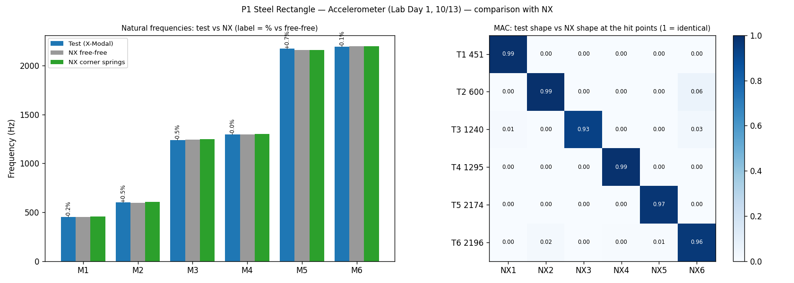
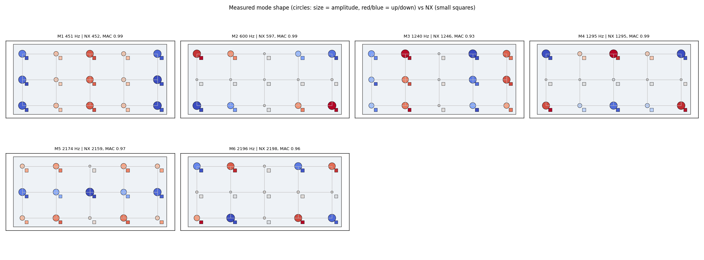
.mat file is an X-Modal UFCELLS cell array. Python (scipy.io.loadmat) pulled out the FRF (dataset 58, type 4), the coherence (dataset 58, type 6), the frequency spacing, the timestamp and the channel labels – the numbers in the raw-data tables and plots come straight from these files..unv) datasets 151 (header), 164 (units), 15 (nodes), 82 (tracelines) and 58 (FRFs) in the exact fixed-width format X-Modal accepts, and re-read every file with the pyuff library to confirm node numbers, labels and data..op2 result files (pyNastran), took the out-of-plane displacement of the top-surface node nearest each hit point, and computed MAC (Modal Assurance Criterion) between each measured shape and each NX shape..mov) were recorded inside X-Modal; Python/ffmpeg only cut each one into a 3-second looping GIF and picked the frame of largest deflection as the still image.Python never replaced X-Modal for the modal fit: every frequency and damping value reported as “X-Modal” was read from X-Modal's Group Manager.